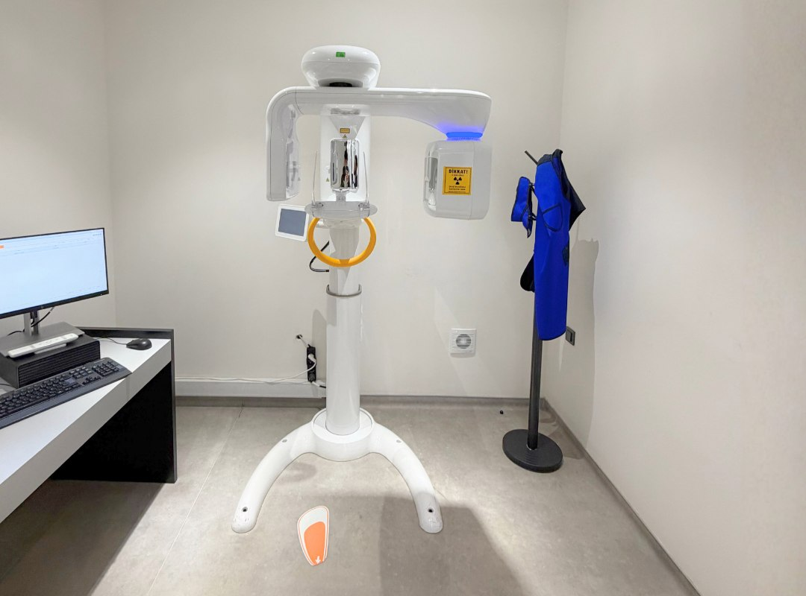
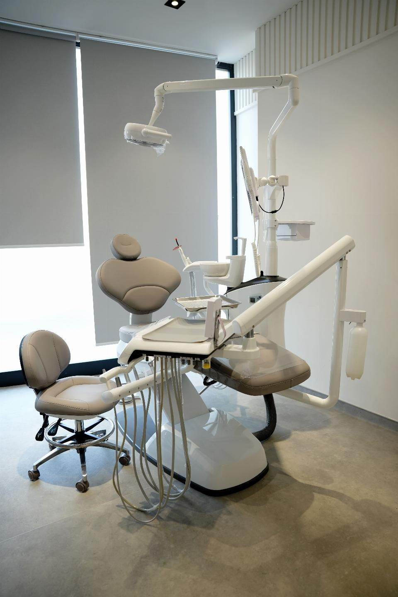

Single implant
Used when one missing tooth needs a root replacement and a final crown-supported restoration.
Dental implants
Implant cases need a clear review of scans, jaw condition, bite, and healing stages before the treatment sequence and visit schedule are confirmed.
Implant treatment scope
Used when one missing tooth needs a root replacement and a final crown-supported restoration.
Structured for patients missing several teeth and needing implant support across more than one site.
Selected cases may need wider planning for a full-arch implant-supported solution after imaging and bite review.
Diagnostics and planning
Panoramic imaging and more detailed scans, when needed, define the available bone support and possible implant position.
Some cases can move faster, while others need staged healing, grafting, or a more conservative sequence.
The implant stage and final prosthetic stage must be planned together so function and aesthetics stay aligned.
The patient should know whether the case is one-visit heavy work or a staged treatment path before travel is fixed.

Dental room gallery

Prepared dental chair setup for implant consultation and restorative planning.

Practical room layout that supports chairside evaluation, diagnostics, and treatment delivery.

Consultation space for reviewing scans, discussing options, and agreeing on treatment sequencing.

Closer view of the tools and room detail that support restorative dental work.
Dental doctors
Oral and Maxillofacial Surgery
Implant and Prosthetic Dentistry
Restorative and Aesthetic Dentistry
FAQ
Smile photos, intraoral photos, and a panoramic X-ray are the most useful starting point. Any older treatment record can help.
Yes. Some cases move quickly, while others need healing time or a staged prosthetic sequence after surgery.
Yes. The first consultation is used to discuss whether the case is likely to need one main visit or a longer staged plan.
Yes. The initial contact can begin on WhatsApp, and the team will tell you what additional imaging is still needed.
Implant consultation
A panoramic X-ray, if available, makes the first consultation more specific and more useful.